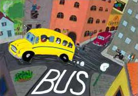
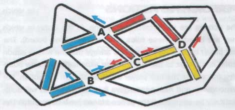
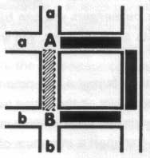
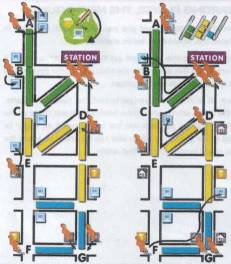
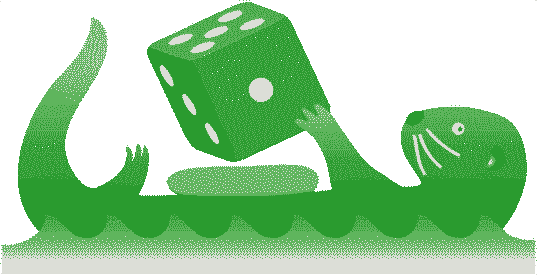

Beep! Beep! Bus is a game about the development of public transport in a city that is expanding quickly. The citizens are busy traveling up and down between their houses, the office and, most importantly: the pub. Your task as a player will be to develop a bus line that takes as many passengers as possible to the place they want to be. You do this by expanding your bus line, by developing new suburbs, by luring new potential passengers to the city and by investing in more and more buses. But you can also try to ride just a bit earlier than other companies and steal their passengers away.
Sometimes, something unexpected happens: time comes to a stand-still, and all of a sudden the demand for transportation is completely different... but you cannot let this happen too often, as the time-space continuum will rupture and the universe will collapse, thus ending the game.
Put the city board and the action board on the table. Each player chooses a color and takes the sticks and the 21 action stones of this color. (With three players, use the colors that have the most sticks.) The scoring disks are placed on island 0 of the score track. Put clock stones on the clock: for three players, four stones; for four or five players, five stones. The unpainted time indicator goes on night (the house). Place four passengers into the city center, one on each crossing with a violet point.
Figure out who the starting player is: take an action stone from each player, mix them and pick one without looking. This player is the first starting player. He receives the “start-bus” and begins the game. The action stones are put on the bus parking lot on the action board, so that each player has one "bus" there.
Before the game really starts, a number of buildings have to be erected first. There are three kinds of buildings: offices (computers), pubs (beer), and houses.
The starting player may first choose two zone A locations (white squares) on the board, and puts a building on both of them. He can freely choose the types of buildings he puts down. The zone B, C and D locations cannot be used until later in the game.
Then the other players, moving clockwise, may erect two buildings; only the A-locations are available. No more than one building can be built on any of the locations.
Now, all players put down a stick of their own colour in one of the streets on the city board. The starting player plays first, followed by the other players in clockwise order. It is allowed to put a stick in a street that already contains one. These sticks indicate the first bus lines.
The last player who played a stick (i.e. the player to the right of the starting player) may now expand his bus line by playing a second stick at one of the ends of the first one.
Then, in counterclockwise order, all other players play a second stick. The starting player is thus the last to play his (or her) second stick. The rules on expanding your bus line, which will be explained later on, must be followed when playing the second stick. This means that it is not always allowed to put this stick in a street that already contains one.
When all players have put down their two buildings and two sticks, the starting player starts the first round.
A round consists of two parts. First, all players choose actions. Then, the actions are performed one by one.
The actions are shown on the action board. Each player has to choose a minimum of two actions each round. The maximum number of actions he or she can choose is limited only by the number of action stones he or she has remaining.
The starting player starts. He places one of his action stones on one of the seven actions. Then the next player, in clockwise order, places one action stone. Play proceeds this way until everyone has chosen at least two actions.
The actions buying a bus, clock and starting player can only be chosen by one player each turn. No player can put an action stone on such an action once it has been chosen by another player.
The other actions may be chosen by multiple players. The first player to choose such an action puts her stone on the square marked a, the second puts his stone on the square marked b, etcetera. One player may choose the same action more than once in the same round.
If a player has already placed two actions when it is his turn to play, he may pass. This means he cannot place any more action stones in that round. Players keep on choosing actions until all players have passed. There is no maximum to the number of action stones that a player may use in one round, but if a player has no more action stones, he or she is out of the game.
The actions are performed one by one, in the order in which they are listed in these rules (and on the action board). The first player to perform an action is always the one whose action stone is furthest to the left. For line expansion and new buildings this will be the last player who has chosen the action. For Vrrooomm... and new passengers it is the first. This will automatically be apparent if the action stones have been put in the right spots.
A player has to perform all the actions he or she has chosen as far as possible. If an action can only be performed partially, it must be completed to the maximum extent possible. It is not allowed to skip actions, or part of actions.
At the start of the game, each player only has one bus. Later, players may buy new buses. The maximum number of buses is defined as the number of buses owned by the player who has the most buses. This maximum number of buses determines the speed of the game. The larger this number, the more passengers, line expansions and buildings can be brought into play each round.
If every player has only one bus, the first player to choose new buildings may erect only one building; the second player to choose the action none at all. Later in the game, someone may have five buses. The first player to choose new buildings now has to build five, the second four, the third three, etcetera. Note that building actions are realised in a different order than the order in which they were chosen!
It is vital for each bus company to have a good route. The city government demands that these routes overlap as little as possible.
The first player to choose line expansion (so, the player on square a) must add as many streets to his route as the current maximum number of buses. The player on square b has to add one less, the player on square c two less, etcetera. Note that these players will have their turns in reverse order, the player on square a being the last one to expand his line. To add a new street, place a stick of your own colour on that street.
A line can only be expanded at one of its two ends (“heads”). It is obligatory to expand a line in a direction which is still devoid of lines. It is not allowed to build a line parallel to somebody else’s line. There are two exceptions to this rule.
1) When there are no empty streets at one of the ends, you can expand your line parallel to someone else’s line until you encounter an empty street. You may freely choose where to go in such a situation, even if this means that three or more lines will go through the same street. On the next crossing, you must turn into an empty street, if it is present.
2) If the head of your own line ends on the same crossing as someone else’s head, you may build a stretch of road parallel to the other player’s line, even if there are still empty streets. If two or more players already have lines along that stretch of road, both (or all) must have a head at the crossing in question for you to build parallel to them. In any case, at the next crossing you will again have to select an empty street, if it is available.

Example: The blue player at A must build in the direction of the arrow. There is a line in both other streets, and there is only one road left open. – Blue could also build at B. Here, he may choose any of the three roads. Although the road straight ahead has been built on by another player, it is allowed to build parallel to the “head” of the other line. If Yellow builds a road there first, this opportunity is lost. – The red player at C may choose in which direction to build. As both roads are occupied, he is free to use any. But he cannot back up along his own line. – At D, Red has to move upwards along the red arrow. He cannot build parallel to the yellow line, because the heads do not touch each other. •
If a player builds a circle, the heads of his line remain at the crossing where the circle has been closed. He or she can only build from this crossing, in two different directions, as there are two heads present. When you close a circle, you should take the action stone from the action board and place it on the crossing to indicate the location of the heads. In this way it is obvious for all players from which point you may build in the next round.
The heads should always remain such that the complete route is a line. So, a bus has to be able to travel from one head to the other passing every street exactly once.
It is also not allowed to build a line parallel to one of your own lines. Lines that have been put on the board can never be demolished.

Example: The black player lays a stick on the shaded spot, thus closing a circle. He can do this in two ways. He can extend the line from A to B, closing the circle at B. In that case, his following street must be one of the streets marked b. If he does not connect one of them right away, he must put the action stone involved at B, so that everyone can see where Black must connect his next street. – Instead of extending the line from A, Black could extend the line from B, closing the circle at A. Now his following street must be one of the streets marked a, and the action stone must be placed at A. •
Rule for Five PlayersWhen playing with five, more sticks are used for line expansions. Every player who chooses this action must add one additional stick.
The first player to choose line expansion (so, the player on square a) must add as many streets to his route as the current maximum number of buses plus one. The player on square b has to add exactly as many as the current maximum number of buses, the player on square c one less, etcetera.
This rule is only applicable to line expansion.
There can be more than one bus on a line. The more buses ride the line, the more passengers you can transport. If you want to move around lots of passengers, you will have to buy more buses.
The player who chose buying a bus puts the action stone he used in the bus parking lot on the action board. Every stone on this parking lot stands for one bus that may ride that player’s line. Each bus will transport a maximum of one passenger per turn.
It is important for all players to know the number of buses owned by the player who has the most buses. This number is called the maximum number of buses. The number of passengers, line expansions and buildings that can be added each turn depends on this maximum number of buses (see above). If the player who has the most buses buys another one, the maximum number of buses immediately increases. All players who have chosen new passengers or new buildings have to bring more passengers or buildings into play that turn.
From time to time, new passengers come to the city. These passengers arrive by train. By choosing the action new passengers players can bring these passengers into play.
Just as in the case of line expansion, the first player to choose new passengers (so the one on a) must bring into play the same number of passengers as the maximum number of buses. The second player places one less passenger, etcetera.
The passengers have to be placed at one of the two stations. It is allowed to distribute the passengers over both stations. The line of the player who chose the action does not have to be connected to the station. The passengers are taken out of the box and are put on the station. If there are no more passengers in the box, no more passengers can be put into play. If someone still chooses this action, he can do nothing.
During the game, the city is expanding continuously. Players can erect new buildings. There are three types of buildings: offices (computers), pubs (beer) and houses.
Just as in the case of line expansion and new passengers, the first player to choose this action (so the one on a) must erect as many buildings as the maximum number of buses. The second player to choose this action erects one less building, etcetera. Note that these players will have their turns in reverse order, the player on square a being the last one to erect a building.
A building may be put on a free building location (white square) on the board. You are free to choose which kinds of buildings you build. At first, only the A-locations may be built. Only when all the A-locations have been filled may the B-locations be used. If they are all full, the C-locations become available. When they too have all been built over, you may start using D-locations. If there are no more free locations, the game ends at the end of the current round.
The city of Bus is located in a strange universe. A crazy professor has developed a complex machine that can halt time for a while. This may be lucrative, but it is also dangerous. If time is stopped too often, the time-space-continuum ruptures, with dramatic consequences for the city.
The action clock can be chosen by just one player each turn. When the action should be performed, this player may choose to stop time. He or she is not obliged to do so. If a player stops time, the time indicator stays on the type of building that it was on. If no one chooses this action, or if the player in question decides not to stop time, the time indicator just moves on one step in clockwise direction.
If a player stops time, he has to take one clock stone from the clock. He keeps this stone, which counts as one minus point. If you choose the clock and let time go its way, you do not get a minus point. If there are no more clock stones on the clock, the time-space-continuum ruptures and the game ends immediately. Further actions in that round are not played. Points are counted immediately.
The object of the game is to let your buses ride their line and to transport as many passengers as possible. The action Vrrooomm… is the only one that scores you any points. A player choosing Vrrooomm… can ride his buses. He does this in the following way.
Each bus can transport a maximum of one passenger. If you have only one bus, you can thus transport only one passenger. The passenger is taken from the crossing where he stood waiting and is put down at the crossing where he wants to be. Buses can ride only their own lines. Passengers or buildings which are on a crossing that is not connected to one of your lines cannot be used.
On each crossing, there can be passengers and buildings. Depending on the time of day as indicated by the clock, passengers will want to be in a certain kind of buildings: their houses, their offices or the pubs. Each building can contain a maximum of one passenger. Passengers that are on a crossing which does not have the type of building needed want to get away. To indicate which players want to get away, it is practical to put all satisfied passengers on their respective buildings.
Only passengers that want to get away can be transported. Of course, one needs an empty building of the right kind to bring the passenger to. This building should be on your own line. Each building can only contain one passenger! If there are no dissatisfied passengers, a player cannot ride his bus. If there are more passengers or empty buildings than the player can use, he or she may freely decide which passengers, or buildings, to use. You must transport as many passengers as possible (keeping in mind the number of buses at your disposal).
If a player chooses the action Vrrooomm… more than once, he may use all his buses again each time he performs the action.
For each passenger that you move, you score one point. These are counted on the islands on the map. The first player to score a certain score puts his disk on the island. If someone else later scores as many points, her disk is put on top of that of the first player.

Example: First the clock (left figure). Time goes on from night to day, so the citizens want to go to the offices. For clarity, passengers on crossings with offices are placed on the buildings (A, B). The one at E crosses the street for that purpose. The passengers at D and G want to leave, because there are no offices there.
Then Vrrooomm… (right figure). Yellow moves first. He has three buses, but he can only score one point. The only passenger he can take is at D. The passenger at E is already where he wants to be. The passengers at F, G, and the station are not on his line. Yellow moves his passenger from D to C. – Green, having two buses, also scores one point. The office at C is now occupied, as are most of the offices at A and B. He can move only one passenger from the station to B. – Blue has enough passengers and free offices on his line to score three points, but as he has got only one bus, he will score only one point. •
A bit of extra attention will give you a head start next turn. To achieve this, choose the action starting player.
Whoever chose this action will get the “start-bus” next turn. If no one chose this action, the start-bus goes to the player to the left of the previous starting player.
When all actions have been performed, the next round starts. All the action stones that have been used (except those on the parking lots) are put back into the box. They will no longer be used in this game. The player who has the start-bus starts the next round by choosing her first action.
The game ends immediately when the last stone is taken from the clock.
The game ends at the end of a round if at that moment only one player has any action stones left to play, or there are no empty building locations.
Whoever has scored the most points wins the game. A clock stone counts as one minus point. If two or more players have the same number of points after subtracting these minus points, the one who has the most clock stones wins. If this is still equal, the one whose stone is on the bottom at the island on which the points are indicated wins.
Bus – 2nd edition. For 3-5 Players aged 14+, 2-3 hours playing time.
Designed by: Jeroen Doumen and Joris Wiersinga. Graphics: Herman Haverkort, Tamara Jannink and Joris Wiersinga. Published by: Splotter Spellen
http://www.splotter.com -- info@splotter.com
Zijpendaalseweg 17 – 6814 CB Arnhem, The Netherlands
Tested by (thank you very much!):
Alan How, Bas de Bakker, Ben Baldanza, Bianca van Duijl, Corné van Moorsel, Gerard Mulder, Koen Haverkort, Leendert van der Meij, Matthias Hardel, Mirjam Molenkamp, Pieter Simoons, Ragnar Krempel, Richard Molenkamp, authors, publishers and others, sorry if we forgot to put you on the list.
